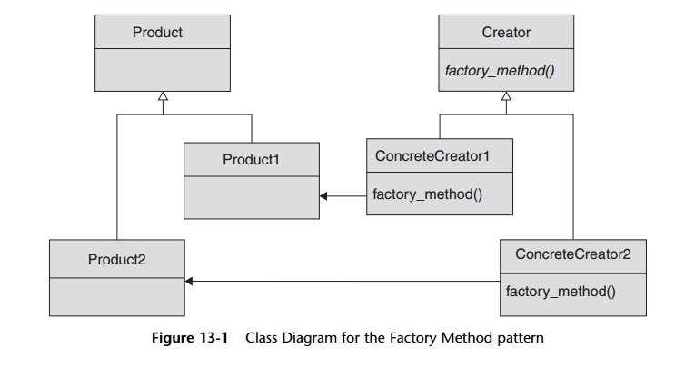

Factory Method pattern
Factory Method defines an interface for creating an object, so that the client that uses the object doesn't need to know
about how the object was created or what went into creating the object, and it can just depend on the interfaces of the created object.
This allows to change the type of object easily without opening the client.
Use Factory Method when a class should care about only the behaviour of an object it uses and not its type.
Factory Method is a good pattern to remove coupling between the client that uses an object and the type of that object.
The client who needs to use the object gets it from the Factory method instead of specifying the type within itself.
The GoF called this technique of pushing the “which class” decision down on a
subclass the Factory Method pattern. Figure 13-1 shows the UML diagram for this
pattern, which includes two separate class hierarchies. On the one hand, we have the
creators, the base and concrete classes that contain the factory methods. On the other
hand, we have the products, the objects that are being created.
